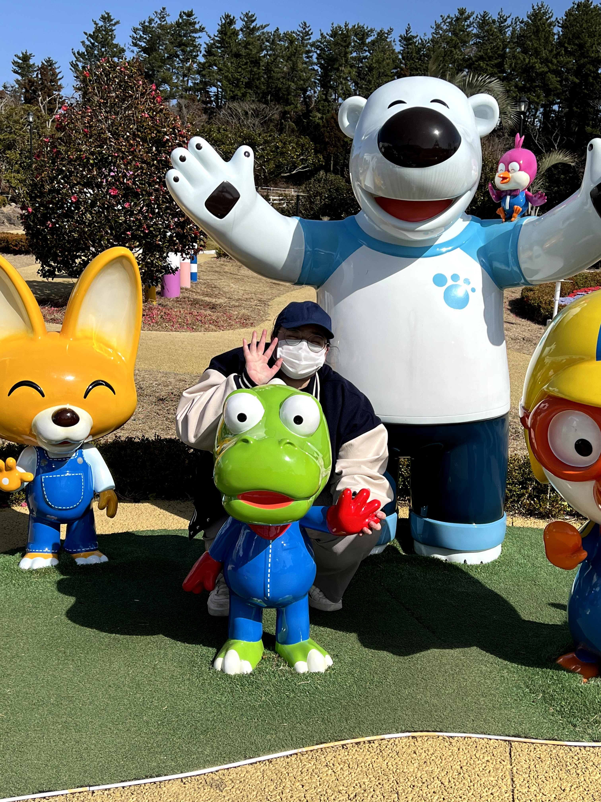

장소윤이란?
| 이름 | 장소윤 | 나이/성별 | 21(여) |
|---|---|---|---|
| 소속 | 명지대학교 ICT융합대학 융합소프트웨어학부 응용소프트웨어전공 22학번 | ||
| 연락처 | 디스코드 | 소윤#0714 | |
| 전화번호 | 010-7764-5328 | ||
| 이메일 | jsu5328@naver.com | ||
| 했던 일 |
2022.03 명지대학교 인문캠퍼스 입학 2022.03 - 2022.09 학회 2022.07 - 2022.09 인턴(영상편집) |
||
| 하고있는 일 |
2022.09 ~ 계약직(영상편집) 2023.03 ~ 멋쟁이사자처럼(명지대-인문) 아가사자 |
||
| 할 일 |
2025 졸업 2026 취업 2028 결혼 |
||
| 자기소개 | |||
|
안녕하세요, 장소윤입니다. MBTI는 istj이고, i가 100%가 나올 정도로 매우 소심한 편입니다. 낯가림도 심해요. 그래도 방구석에서 끊임없이 무언가를 하고있으니, 언제든 연락주시면 칼답으로 보답해드리겠습니다. 음.. istj는 로봇이라는 소리를 많이 들어요. 어느정도는 맞습니다..하지만 전 감정이 풍부해요. 표현을 못 할 뿐이랍니다. 요즘 실수로 잡아버린 전공 때문에 리액트 네이티브까지 하고 있는데 슬퍼요. 약간 기절하고 싶지만, 재미 있어서 참았어요. 아직 도메인을 정하지 못했을 뿐더러, 어느 직종으로 갈지도 정하지 못했어요. 그냥 다 재밌을 것 같은데.. 그래서 다 경험해보기로 했어요. 가장 재밌는 것을 찾는게 제 대학시절 목표에요. 사실 임베디드 소프트웨어와 IOT에도 관심이 있는 것 같아요. 그냥.. 컴퓨터로 하는 일이면 뭐든 재밌어하는 것 같아요.(과제말고요.) 아무튼 그렇습니다. 게임 좋아해요. 웬만한 게임 다 해본 것 같아요. 오랫동안 하고 있는 게임은 세가지에요. 리그오브레전드, 마인크래프트 그리고 몬스터헌터월드 이렇게요. PC게임 말고도, 닌텐도 게임 또한 무지무지 좋아한답니다. 최근에 인생 억까를 너무 당해서 인터넷 사주를 봤어요. 아니 세상에, 제가 26살에 결혼한다네요? 이왕 결혼하는거 시원하게 애국하겠습니다. 장소윤 2세 파이팅~! |
|||
장소윤의 별명
"저는 우직한 머슴입니다. 부려주십쇼." -우직한 장소윤-
나를 어구로 표현하자면, "우직한머슴" 이라고 할 수 있다. 이 단어의 기원은 기억이 나지 않는다. 아마 친구가 붙여줬던거같다. 나의 별명을 소개하면, 모두가 납득한다. 그렇다. 난 태생적으로 우직했고, 머슴마냥 시키는 일을 아주 잘한다. 일을 만들어서라도 한다. 성과는 잘 모르겠고 효율이 좋은지도 잘 모르겠지만 가만히 있는거 보단 낫다.
장소윤의 크롱
|  |
"노는게 제일 좋아♫" -나 소윤쓰 21살인디- |
|---|---|
|
나의 최애는 뽀롱뽀롱 뽀로로의 크롱이다. 귀여워서 좋아한다. 크롱의 베스트 장면 중 하나는, "슈퍼썰매대모험"이라는 극장판에서 모두 사부(거북이 캐릭터)를 외면할 때 마음씨 착한 크롱만이 그를 챙겨주는 장면이다. 귀엽운데다가 착하기까지하다. 좌측의 사진은 제주도의 뽀로로 테마파크를 놀러가서 찍은 사진이다. 사실 여기 가려고 제주도 다녀왔다. |
장소윤의 왈왈이
"괄괄이 이전에 왈왈이가 있었다구요." -억울한 장소윤-
우리집 강아지의 이름은 "몽이"였다. 몽이라는 이름은 어디에서 왔는가? 바로 "알퐁스"에서 왔다. 2016년 7월 16일, 낮잠을 자고 일어나니 내 방문 앞에 수건이 깔려있었고, 그 위에는 손수건을 덮은 작고 소중한 솜뭉치가 있었다. 아빠 친구분께서 강아지가 너무 많아 한 마리 얻어왔다고 한다. 그렇게 이 작은 솜뭉치는 어떠한 예고도 없이 함께하게 됐다.
이 아이의 이름을 무엇으로 할까 고민하던 중 친구가 학교의 콘크리트 기둥에게 붙여준 이름, "알퐁스"가 떠올랐다. '튼튼하게 자라라, 오래살아라' 라는 의미에서 알퐁스라고 짓기로 했으나, 부모님께서는 너무 길다고 반대하셨다. 이 아이의 작명 2안은 알퐁스를 딴 "퐁이" 였다. 그러나 "퐁"이라는 파열음은 발음하기 어려웠고, 부모님께서는 여전히 반대하셨다. 결국 퐁을 부드럽게 하여, "몽이"가 되었다.
우리 몽이는 3개월차까지 짖지 않았다. 난 그 이유를 "짖는 방법을 어미에게 배우지 못해서" 라고 생각했다. 그래서 열심히 짖어줬다.
짖는 것은 좋았으나, 정도를 몰랐다. 계속 왈왈 거렸다. 그래서 나는 그 아이를 "왈왈이"라고 부르기 시작했다. 마치 피~까!츄~ 하는 생명체를 피카츄라고 부르는 것 처럼. 부모님 또한 자연스럽게 "왈왈이 밥좀 줘라"라며 개명에 동참했고, 우리 아이는 "왈왈이"가 되었다.
며칠 전 TV에서 나영석PD의 예능을 봤다. 그 곳에서는 시끄러운 이영지(22)씨를 "괄괄이"라고 칭하고 있었다. 나, 작명센스만큼은 나영석PD의 발끝에 도달했을지도. 아니, 생각해보니 내가 먼저잖아? 특허 낼 것을, 후회했다.